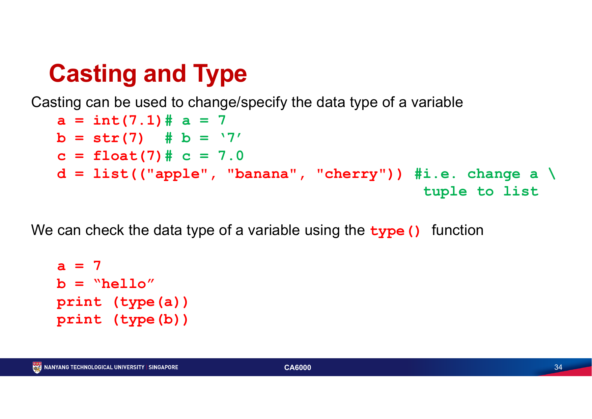
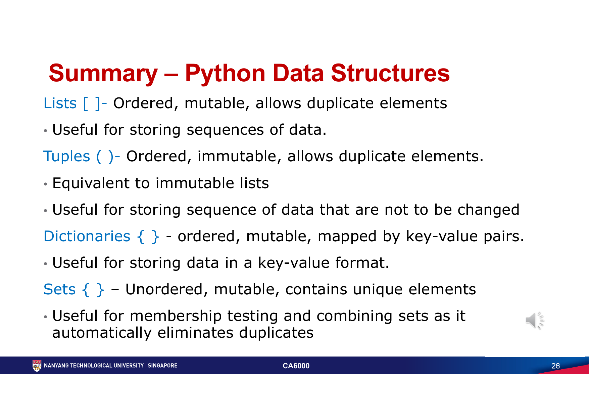
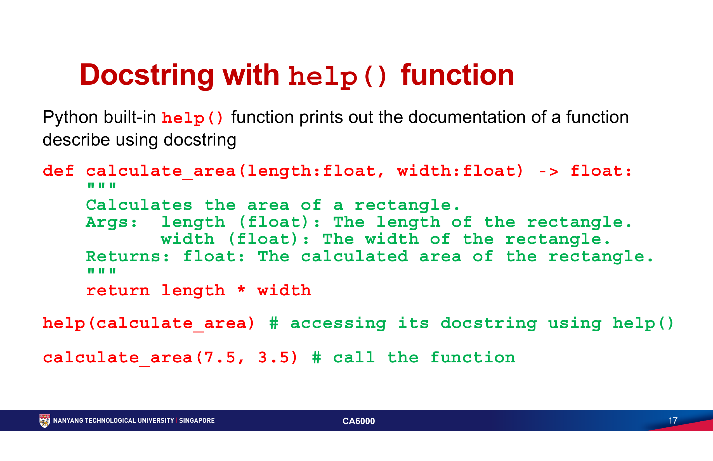

第一周：Python 基础、数据结构与函数
从 Python 的交互式运行环境开始，建立变量、类型、控制流、集合与函数这套共同语言。重点不是记住语法，而是能把一个小问题写成可读、可检查、可复用的程序。
必须掌握的术语
| 术语 | 准确理解 |
|---|---|
| interpreter / interactive mode | Python interpreter 执行 Python 代码；交互模式会在每次按 Enter 后立即执行一条语句，适合快速验证想法。 |
| variable / constant | 变量绑定一个可改变的值；常量是约定不变的名字，通常使用全大写命名。Python 的变量名绑定对象，不是预先声明好的固定类型容器。 |
| str / int / float / bool | 文本、整数、浮点数与布尔值；input() 的结果始终是 str，需要时必须显式转换。 |
| casting / type hint | casting 用 int()、float()、str() 等转换对象；type hint 用注解表达预期类型，提升可读性和工具检查能力。 |
| conditional / loop | if / elif / else 根据布尔条件分支；while 在条件为真时重复，for 遍历 iterable 或 range()。 |
| list / tuple / dict / set | list 有序可变；tuple 有序不可变；dict 用唯一 key 映射 value；set 无序且自动去重。 |
| comprehension | 用单行表达式由 iterable 构造 list 或 dict，例如 [x for x in values if x > 0]；应优先保持可读。 |
| parameter / argument | parameter 是函数定义中接收数据的名字；argument 是调用函数时实际传入的值。 |
| return / scope | return 将结果交回调用者；scope 决定名字在 local、enclosing、global 或 built-in 范围内是否可见。 |
| generator / lambda / decorator | generator 用 yield 按需产出值；lambda 是短小匿名函数；decorator 在不改调用方式的前提下包装并扩展函数行为。 |
核心知识
Topic 0 · Course Intro｜把环境与学习目标先对齐
本章工具：Python interpreter、Jupyter Notebook / JupyterLab、Miniconda 或 Anaconda。课程的 AI 应用基础是“写得出、跑得动、能解释”的 Python 程序，而不是只会复制 notebook 单元格。
课件要求先熟悉 JupyterLab / Notebook 的交互式工作方式，也偶尔使用命令行解释器理解最基本的执行过程。环境安装后先在同一环境里验证 Python 与所需库可用；包安装与 notebook kernel 必须指向同一环境，避免“已安装却导入失败”。
Topic 1 · Python Basics｜从值、类型到控制流
本章代码：print()、input()、f-string、type()、类型转换、字符串方法、if、match、while、for、break、continue。
变量在第一次赋值时创建，命名应表达用途并遵循 snake_case；常量用全大写表达“不应修改”的约定。字符串可用索引和切片访问，常见操作包括 strip()、upper()、lower()、find() 与 f-string 格式化。注释解释“为什么”，docstring 记录可被 help() 读取的接口说明。

input() 默认产生字符串；先确认目标类型，再用显式 casting 转换，避免把文字拼接误当数值计算。raw_age = input("Age: ")
age = int(raw_age)
if age >= 18:
print(f"adult: {age}")
else:
print(f"minor: {age}")
条件表达式必须产生真/假；Python 用冒号和缩进定义代码块。for 适合遍历次数或序列已知的任务；while 必须设计退出条件。break 退出当前循环、continue 跳过本轮、pass 只是占位；循环变量未被使用时用 _ 明确表达这一点。
Topic 2 · Data Structures｜按数据关系选容器
本章代码：list 的索引、切片、append()、extend()、pop()、sorted()；tuple；dict 的 get()、items()、update()；set 的 union()、intersection()。

list 适合可变序列，tuple 适合固定记录或可作字典 key 的不可变值，dict 用 key-value 提供可读访问，set 适合成员判断与去重。课件中的“ordered”不等于可按数值索引：dict 保留插入顺序（Python 3.7+），但仍用 key 访问。不要用 set 后再假定元素顺序稳定。
scores = {"Ada": 88, "Lin": 92, "Ada": 95}
unique_cities = set(["SG", "JP", "SG"])
passing = [name for name, score in scores.items() if score >= 50]
print(scores["Ada"]) # 95：key 必须唯一
print(unique_cities) # {"SG", "JP"}，顺序不作为语义
Topic 3 · Functions｜把重复逻辑变成清楚的接口
本章代码：def、位置/默认/可变数量参数、return、type hints、docstring、help()、yield、lambda、filter() 与 decorator。
函数先定义再调用。参数让函数接收变化的数据，默认参数为常见情形提供默认值；多个可选值可以用 *args，但要保持调用语义清晰。能计算出结果时应 return 值，而不是只在函数内部 print()；调用者才能组合、测试与复用结果。

def calculate_area(length: float, width: float) -> float:
"""Return the area of a rectangle."""
return length * width
area = calculate_area(7.5, 3.5)
print(area)
局部变量应通过参数和返回值传递，而不是随意修改 global。generator 用 yield 按需处理大序列；lambda 适合短小、一次性的表达式；decorator 可在调用前后统一加入检查或日志。三者都服务于清晰与节省资源，不能只为“写得短”而牺牲可读性。
常见错误
- 忘记
input()是字符串，直接进行数值计算或比较。 - 混淆
=（赋值）与==（比较），或用错误缩进改变分支/循环范围。 - 修改 tuple，或把 set 当成有稳定索引顺序的 list 使用。
- 直接访问可能不存在的 dict key；需要可选值时优先考虑
get()或显式检查。 - 函数只打印不返回，或用 global 变量在多个函数间偷偷传递状态。
- 把复杂多行逻辑塞进 comprehension 或 lambda，令错误难以定位。
练习
读取距离与时长，完成显式类型转换；用 if/elif/else 选择费率，并以 f-string 输出费用。分别测试空输入、非数字和边界值。
以 dict 存一门课的名称、分数和标签，以 list 存多门课；用 set 找出所有不重复标签。解释为何每种结构都适合其任务。
实现
summarise(values: list[float]) -> dict，返回最小值、最大值和平均值。写 docstring；空 list 时设计明确行为，而不是让错误悄悄发生。